{kind=link}
{kind=link}
{kind=link}
{kind=link}
{kind=link}
{kind=link}
{kind=link}
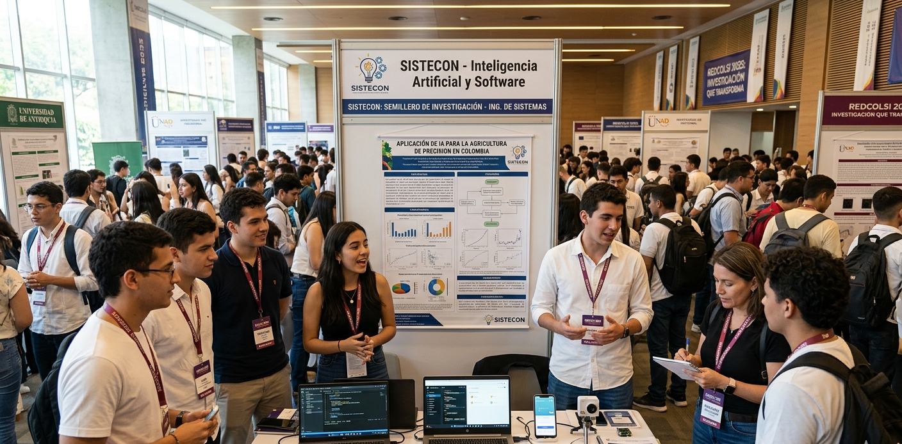
SISTECON en RedCOLSI 2025
Marzo 2025
Participación del semillero en el Encuentro Nacional RedCOLSI.
Leer más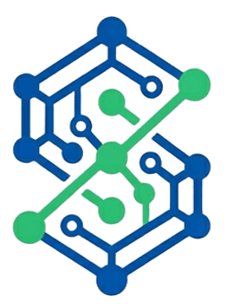
SISTECON es un espacio académico de formación investigativa donde estudiantes de Ingeniería de Sistemas transforman ideas en soluciones tecnológicas con impacto real en la región amazónica y el país.
Saber másSISTECON fue fundado en el año 2015 por un grupo de cuatro estudiantes y dos docentes del programa de Ingeniería de Sistemas de la Universidad de la Amazonia, motivados por el deseo de crear un espacio formal para la investigación aplicada en tecnología. En sus primeros años el semillero se enfocó en el desarrollo de software educativo para instituciones de la región. Con el paso del tiempo amplió sus líneas de trabajo hacia la inteligencia artificial, la seguridad informática y la computación en la nube. En 2018 obtuvo su primer reconocimiento en el Encuentro Nacional de Semilleros RedCOLSI, y desde entonces ha consolidado una trayectoria de participación activa en eventos científicos nacionales e internacionales. A la fecha, SISTECON cuenta con más de 60 egresados que hoy ejercen como investigadores, desarrolladores y docentes en diferentes regiones del país.
Formar estudiantes con competencias investigativas sólidas en el campo de la ingeniería de sistemas y las tecnologías de la información, mediante el desarrollo de proyectos científicos, tecnológicos e innovadores que contribuyan a la solución de problemáticas reales del entorno regional y nacional, en un ambiente colaborativo, ético y de excelencia académica.
Para el año 2030, SISTECON será reconocido a nivel nacional como un semillero de investigación líder en el desarrollo de soluciones tecnológicas con impacto social, consolidado por su producción académica de calidad, su red de alianzas estratégicas y la formación integral de sus integrantes como futuros investigadores e innovadores en el campo de la ingeniería de sistemas.
Fomentar la cultura investigativa en los estudiantes de Ingeniería de Sistemas de la Universidad de la Amazonia, mediante la ejecución de proyectos de investigación aplicada en tecnología, software e inteligencia artificial que generen conocimiento pertinente y transferible al contexto regional.
Desarrollo de soluciones de software con énfasis en arquitecturas limpias, patrones de diseño GoF, metodologías ágiles y calidad del software.
Investigación en modelos de aprendizaje automático, procesamiento de lenguaje natural, análisis de datos y aplicaciones de IA en contextos educativos y empresariales.
Estudio y desarrollo de estrategias para la protección de sistemas de información, gestión de riesgos digitales y buenas prácticas en seguridad de la información.
Exploración de tendencias tecnológicas como computación en la nube, IoT, blockchain y realidad aumentada aplicadas al contexto regional.
Diseño e implementación de plataformas y recursos digitales para mejorar los procesos de enseñanza-aprendizaje.
Auditorio Principal, Universidad de la Amazonia, Florencia, Caquetá
Espacio académico de socialización y debate donde semilleros de la región Amazónica presentarán avances en proyectos de investigación en tecnologías de la información, inteligencia artificial y desarrollo de software. Incluye ponencias, mesas de trabajo, talleres prácticos y premiación de mejores proyectos.
Laboratorio de Cómputo 2, Bloque de Ingeniería, Universidad de la Amazonia
Taller práctico de ocho horas dirigido a integrantes activos y nuevos del semillero, orientado al manejo de herramientas para documentar, reproducir y publicar investigaciones computacionales. Impartido por el docente investigador del semillero con apoyo de un estudiante de posgrado.
Virtual (plataforma institucional) y presencial en sede Florencia
SISTECON convoca a todos sus integrantes y estudiantes interesados a presentar propuestas de ponencia para el Encuentro Regional de Semilleros RedCOLSI. El semillero brindará acompañamiento metodológico, revisión de documentos y apoyo en la elaboración del artículo de ponencia a todos los postulantes seleccionados.

Sala de Usos Múltiples, Edificio Administrativo, Universidad de la Amazonia
Maratón de programación de 24 horas en la que participaron 18 equipos de estudiantes de diferentes programas de la universidad. El equipo ganador desarrolló una aplicación móvil para el monitoreo de niveles de contaminación del río Hacha.

Modalidad virtual — Plataforma Zoom institucional
Seminario de carácter internacional con ponentes de Colombia, México y Argentina. SISTECON presentó avances de su proyecto sobre el uso de IA por estudiantes de Ingeniería de Sistemas.
Equipo enfocado en el diseño, desarrollo y prueba de soluciones de software aplicando metodologías ágiles, arquitecturas limpias y patrones de diseño.
Valentina Ortiz Muñoz
Líder / Arquitecta de software
Camilo Andrés Perdomo
Desarrollador Full Stack
Laura Daniela Ríos Castro
QA y Pruebas de Software
Equipo dedicado a la investigación y aplicación de técnicas de machine learning, análisis de datos y procesamiento de lenguaje natural.
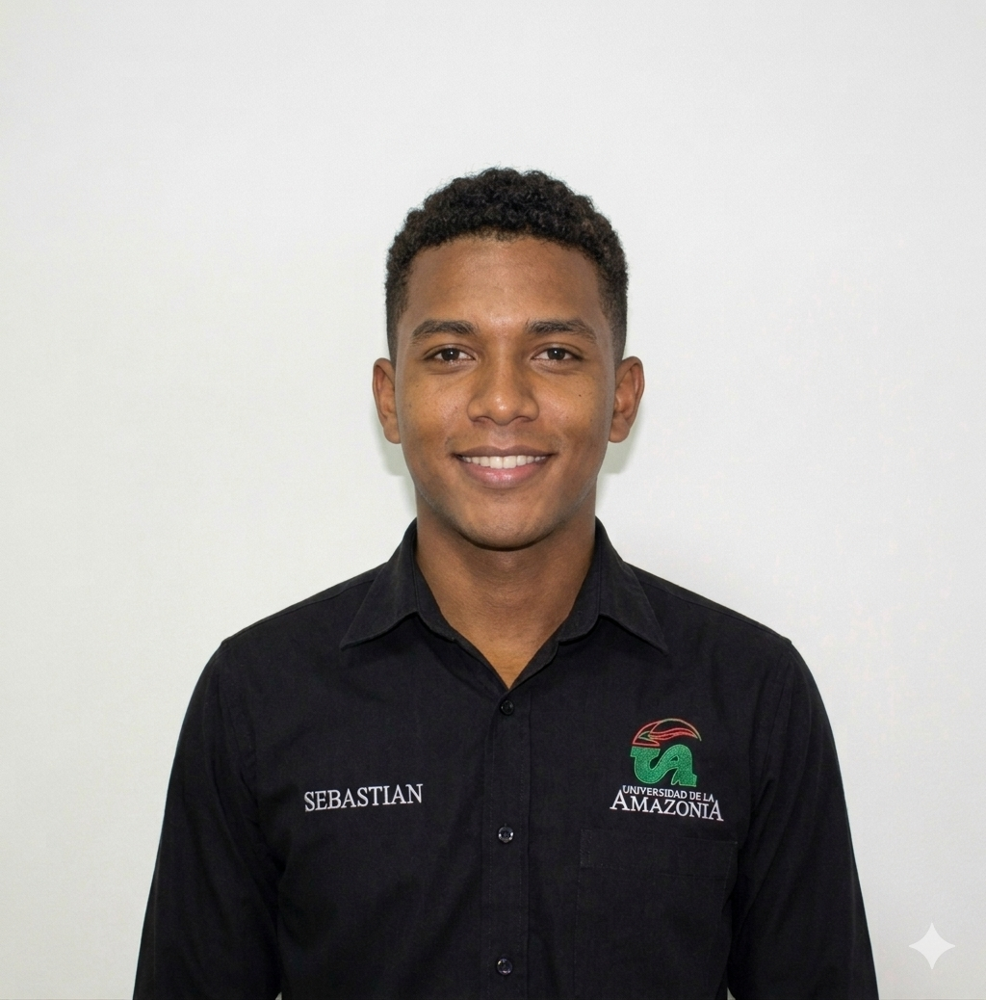
Sebastián Mora Zambrano
Líder / Científico de datos
Natalia Suárez Pinto
Analista de datos
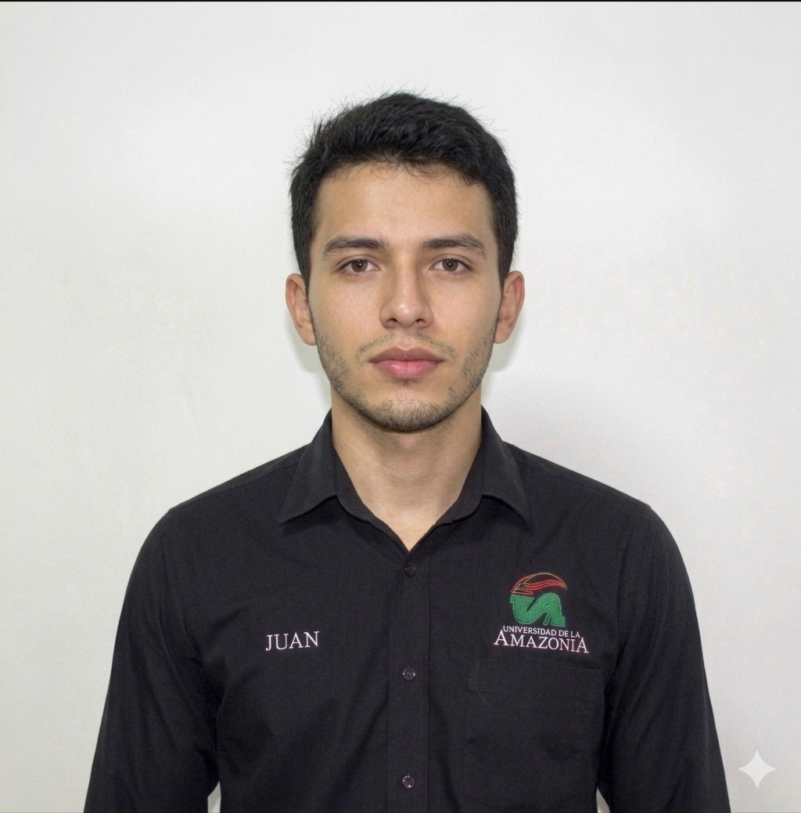
Juan Felipe Cuellar
Ingeniero de Machine Learning
Equipo orientado al estudio, análisis y desarrollo de estrategias para la protección de sistemas de información.
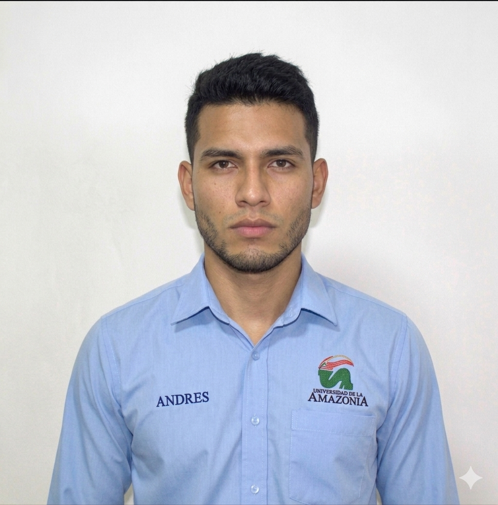
Andrés Felipe Vargas
Líder / Ciberseguridad
Mariana Lozano Fierro
Seguridad de redes
Carlos David Bolaños
Políticas de seguridad
Plataforma web y móvil de apoyo al aprendizaje de matemáticas para estudiantes de básica secundaria en zonas rurales. Integra gamificación, rutas personalizadas y retroalimentación automática basada en el desempeño.
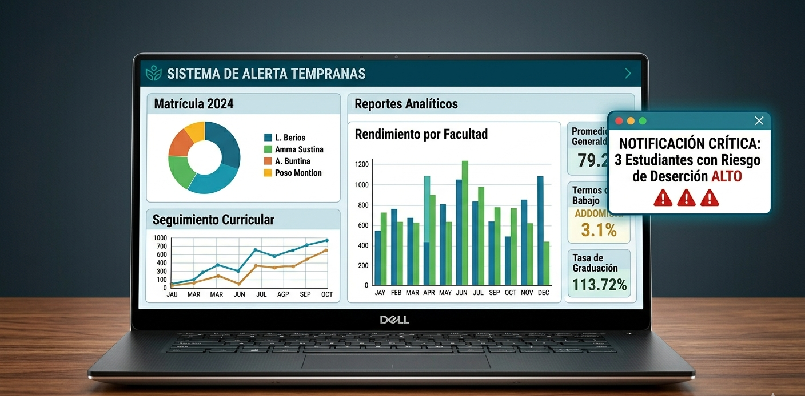
Sistema de Información para la Gestión Académica desarrollado para optimizar los procesos administrativos del programa de Ingeniería de Sistemas.
Autores: Dr. Ricardo Gutiérrez Mora, Valentina Ortiz Muñoz, Camilo Andrés Perdomo
Año: 2024
Descargar PDFAutores: Dra. Adriana Salcedo Parra, Sebastián Mora Zambrano, Natalia Suárez Pinto
Año: 2023
Descargar PDFAutores: Sebastián Mora Zambrano, Dr. Ricardo Gutiérrez Mora, Juan Felipe Cuellar
Año: 2024
Descargar artículoAutores: Valentina Ortiz Muñoz, Laura Daniela Ríos Castro, Dra. Adriana Salcedo Parra
Año: 2023
Descargar artículoAutores: Andrés Felipe Vargas, Mariana Lozano Fierro, Carlos David Bolaños
Año: 2024
Descargar PDFAutores: Camilo Andrés Perdomo, Laura Daniela Ríos Castro, Dr. Ricardo Gutiérrez Mora
Año: 2023
Descargar PDF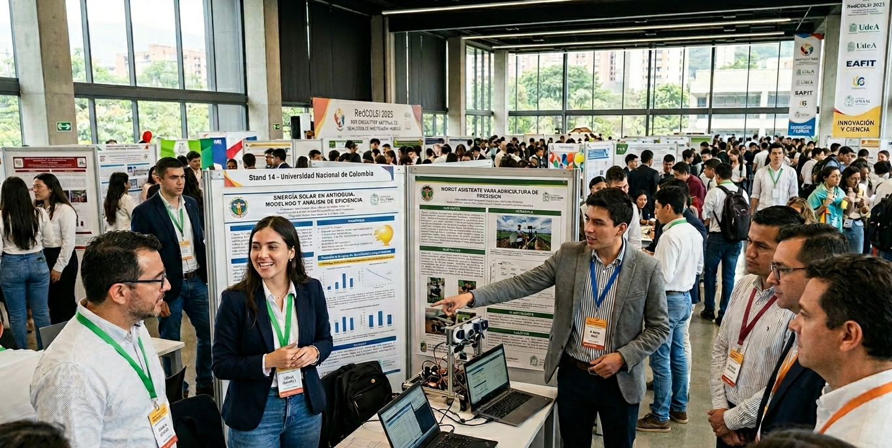
Presentación en RedCOLSI 2023
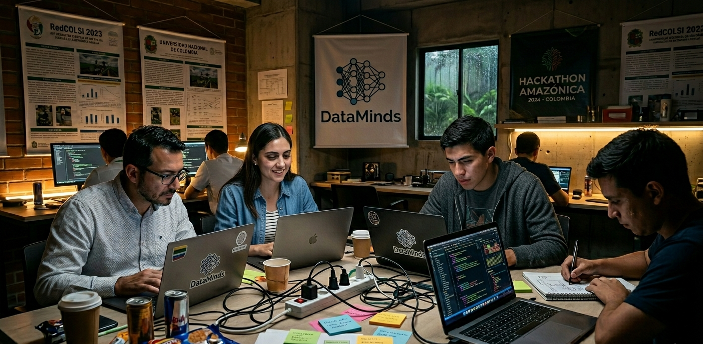
Hackathon Amazónica 2024
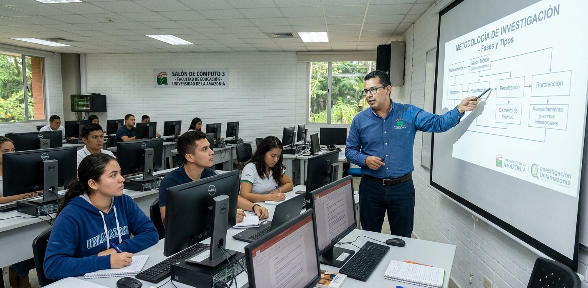
Sesión de investigación
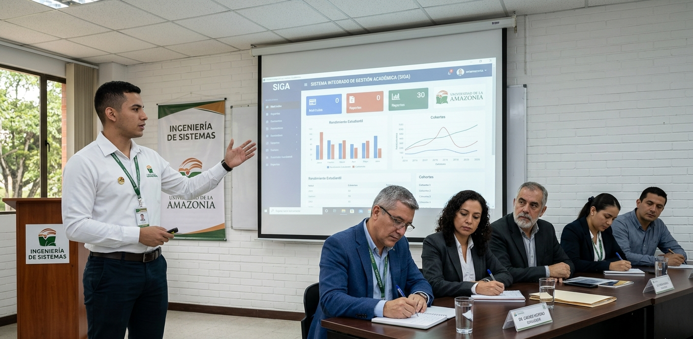
Presentación del sistema SIGA
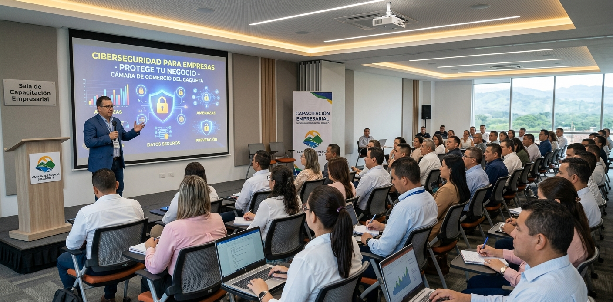
Taller de ciberseguridad
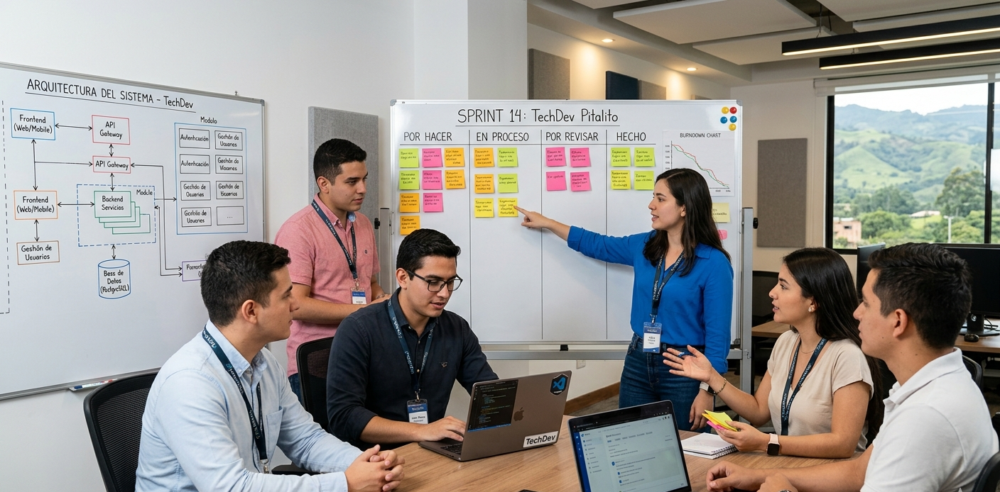
Planificación equipo TechDev
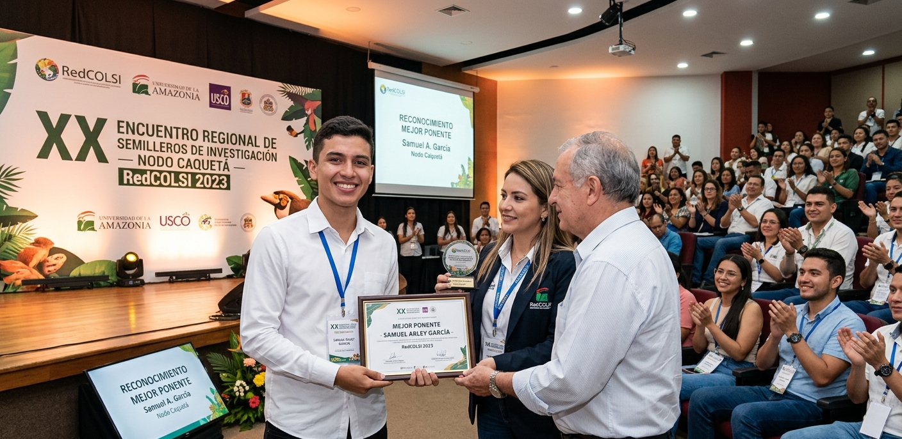
Mejor ponente RedCOLSI 2023
"Ingresar a SISTECON fue la mejor decisión de mi carrera. Aquí aprendí a investigar con rigor, a trabajar en equipo bajo presión y a presentar mis ideas con claridad. Las habilidades que desarrollé me abrieron las puertas a una oportunidad laboral antes de graduarme."
— Valentina Ortiz
"Lo que más valoro de SISTECON es que enseñan a pensar como investigador. Aprendes a identificar problemas reales, a buscar soluciones con base en evidencia y a defender tus ideas con argumentos sólidos."
— Camilo Perdomo
"Participar en RedCOLSI fue una experiencia increíble que fortaleció mi perfil académico y me permitió conectar con investigadores de todo el país."
— Natalia Suárez
"El semillero impulsa la innovación y permite aplicar conocimientos en proyectos reales con impacto en la comunidad. Una experiencia que recomiendo a todos."
— Juan Felipe Cuellar

Marzo 2025
Participación del semillero en el Encuentro Nacional RedCOLSI.
Leer más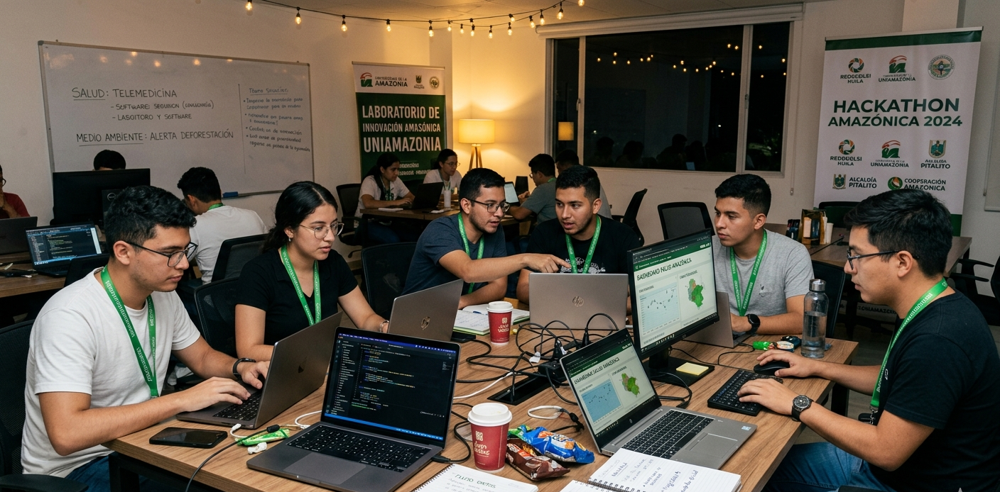
Noviembre 2024
Desarrollo de soluciones tecnológicas en maratón de programación.
Leer más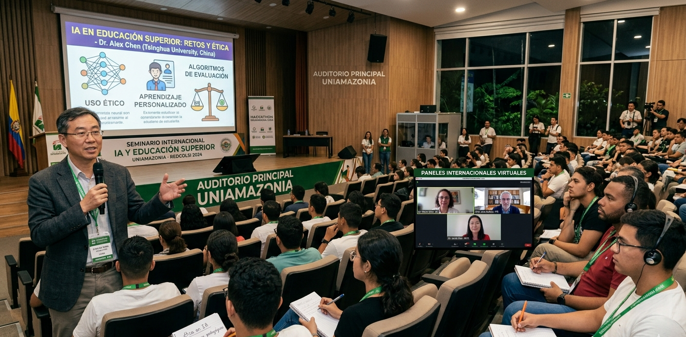
Abril 2024
Evento académico sobre inteligencia artificial en educación.
Leer más¿Tienes preguntas sobre nuestras actividades, deseas unirte al semillero o proponer una colaboración? Completa el formulario y nos pondremos en contacto en máximo 48 horas hábiles.
Bloque 7
Universidad de la Amazonia
Florencia, Caquetá – Colombia
Lunes a Viernes
2:00 PM – 6:00 PM
3143768769